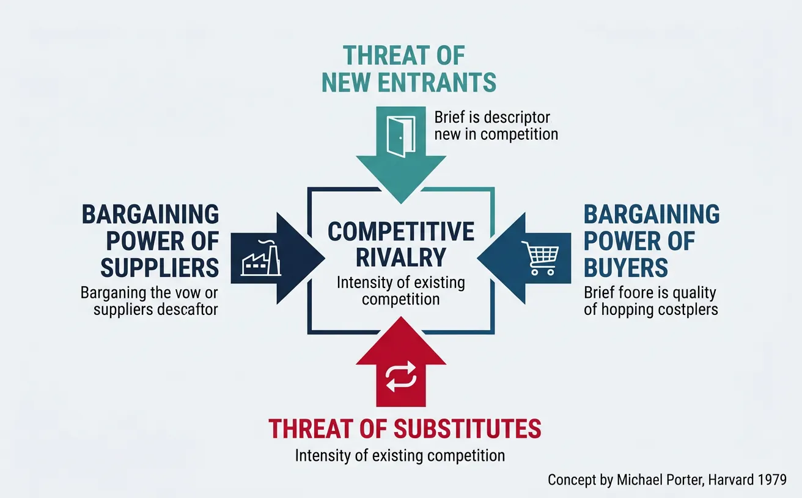
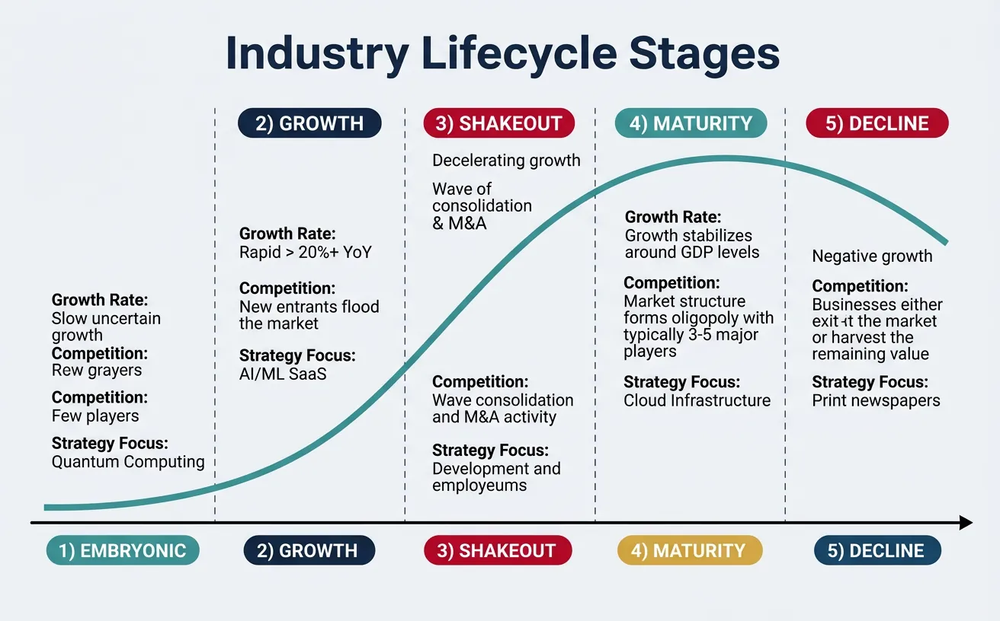
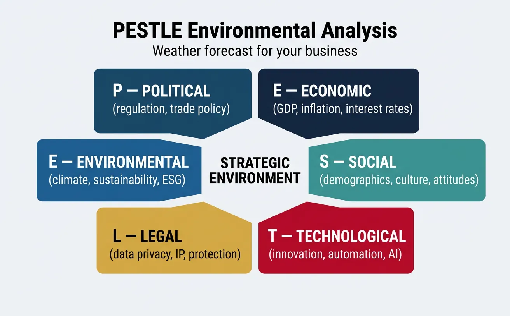
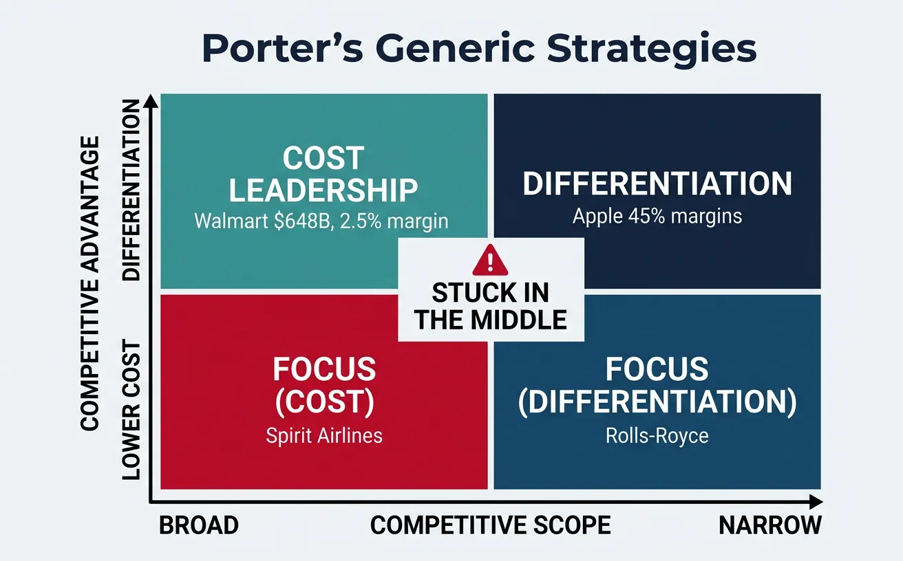

We use cookies to enhance your browsing experience, serve personalized content, and analyze our traffic.
By clicking "Accept All", you consent to our use of cookies. See our
Privacy Policy
for more information.
Part 15 of 21: Building on distribution strategy from Part 14, this article provides strategic analysis frameworks to evaluate markets, competition, and strategic options.
Strategic analysis is the GPS for business decisions. Just as a GPS doesn't tell you where to go — it shows you the terrain, traffic, and routes so you can make informed choices — strategic frameworks don't give you the answer, they give you the structured thinking to find it. McKinsey, BCG, and Bain analysts don't have secret data — they have disciplined frameworks that force rigorous analysis of the right questions.

Porter's Five Forces — the most influential framework for analyzing industry structural attractiveness
Porter's Five Forces is the most influential strategy framework ever created. Developed by Michael Porter at Harvard Business School in 1979, it explains why some industries are consistently profitable (pharmaceuticals: 20%+ margins) while others are brutal (airlines: 2-3% margins). The five forces determine the structural attractiveness of an industry.
Force
What It Measures
High = Bad For You
Example
Competitive Rivalry
Intensity of existing competition
Price wars, margin compression
Airlines — American, Delta, United in constant fare wars
Threat of New Entrants
How easy it is for newcomers to enter
New competitors erode market share
SaaS — low barriers, AWS makes infrastructure instant
Bargaining Power of Buyers
Customer leverage over pricing
Buyers squeeze margins, demand more
Walmart — dictates terms to consumer goods suppliers
Bargaining Power of Suppliers
Supplier control over inputs
Suppliers raise costs, restrict supply
TSMC — sole advanced chipmaker for Apple, Nvidia, AMD
Threat of Substitutes
Alternative solutions that replace yours
Customers switch to different categories
Streaming substituted cable TV; Zoom substituted business travel

Industry lifecycle stages — from embryonic to decline with strategic focus at each phase
Industry Lifecycle Analysis
Stage
Growth Rate
Competition
Strategy Focus
Example
Embryonic
Slow, uncertain
Few players, no standard
Educate market, establish category
Quantum computing (2025)
Growth
Rapid (20%+ YoY)
New entrants flooding in
Land grab, scale fast, build moats
AI/ML SaaS tools (2023-2025)
Shakeout
Decelerating
Consolidation, M&A wave
Acquire or be acquired, efficiency
E-scooter market (Lime, Bird)
Maturity
Stable (GDP-level)
Oligopoly, 3-5 dominant players
Defend share, optimize margins
Cloud infrastructure (AWS, Azure, GCP)
Decline
Negative
Exit or harvest
Milk cash flows, strategic exit
Print newspapers, traditional taxis
Value Chain Analysis
Case Study: Apple's Value Chain Mastery
Value Chain$3.7T Market Cap
Challenge: How does Apple command 80%+ of smartphone industry profits while selling <20% of units?
Strategy: Apple dominates the highest-margin activities in the value chain while outsourcing low-margin ones. They design chips in-house (A-series/M-series) for performance differentiation, control the OS and App Store (30% commission on $1.1T in developer billings), own the retail experience (523 stores with $5,500+ revenue per square foot — highest in retail), and build the services ecosystem ($96B/year in Services). Manufacturing is outsourced to Foxconn at razor-thin margins.
Results: Apple captures 85% of global smartphone profits despite 18% unit market share. Their vertical integration of silicon, OS, and services creates value that competitors can't replicate. Revenue reached $383B with 46% gross margins — compared to Samsung's 25% margins selling 5x the units.
Environmental Analysis
PESTLE Framework
PESTLE is the weather forecast for your business environment. Just as a sailor checks wind, tides, and storms before setting sail, strategists scan six environmental dimensions to anticipate forces that could accelerate or destroy their strategy.

PESTLE framework — scanning six environmental dimensions for strategic planning
Gen Z's demand for authenticity → raw, unpolished content outperforms
Technological
Innovation, automation, digital infrastructure
New channels, tools, competitive threats
Generative AI → content creation 10x faster, SEO strategy transformed
Legal
Data privacy, IP, employment, consumer protection
Data collection limits, consent requirements
GDPR/CCPA → cookie deprecation, first-party data strategy essential
Environmental
Climate, sustainability, ESG requirements
Green marketing, ESG positioning, supply chain
EU Green Claims Directive → anti-greenwashing enforcement
SWOT Analysis
From SWOT to TOWS: Most people do SWOT wrong — they list random bullet points and stop. The real power is the TOWS matrix, which forces you to cross-reference all four quadrants and generate actionable strategies. SO strategies leverage strengths to exploit opportunities. WO strategies address weaknesses to capture opportunities. ST strategies use strengths to mitigate threats. WT strategies minimize weaknesses and avoid threats. This transforms SWOT from a passive list into a strategic action generator.
External Scanning
Case Study: Netflix's Environmental Scanning
External Scanning283M Subscribers
Challenge: Netflix transformed from DVD mail-order to streaming global dominance by reading environmental signals others missed.
Key Signals Detected: (1) Technology: Reed Hastings saw broadband adoption curves and predicted streaming viability 5 years early — launching streaming in 2007 when most households still had slow internet. (2) Social: They identified the "binge-watching" behavior pattern before it had a name, releasing full seasons at once. (3) Economic: They priced below cable bundles ($8/month vs $100+), perfectly timed with the 2008 recession's cord-cutting wave. (4) Political: They navigated content regulation in 190+ countries by investing in local-language originals.
Results: Netflix grew to 283M subscribers across 190+ countries with $33.7B revenue. Their content spend of $17B/year creates both a competitive moat and global distribution advantage. The company they disrupted (Blockbuster) went bankrupt in 2010.
Competitive Strategy
Competitive Positioning
Porter identified three generic strategies for achieving competitive advantage. The fatal mistake is being "stuck in the middle" — trying to be everything to everyone and excelling at nothing. Companies must choose:

Porter's generic strategies — cost leadership, differentiation, and focus positioning
Strategy
Core Advantage
Risk
Example
Cost Leadership
Lowest cost producer in the industry
Commoditization, race-to-bottom pricing
Walmart ($648B revenue, 2.5% operating margin, impossible to undercut at scale)
Differentiation
Unique product/service commanding premium
Premium erosion if differentiation isn't sustained
Apple (45% margins on differentiated design, ecosystem, brand)
The Competitive Response Matrix: When a competitor makes a move, don't react — analyze first. Ask: (1) Awareness: Do we know what they're actually doing? (2) Motivation: Why are they doing it? Desperation or strategic expansion? (3) Capability: Can they sustain this move? (4) Impact: Does this actually threaten our core business? Most competitive moves deserve monitoring, not counter-attack. 80% of competitive "threats" resolve themselves without intervention because the competitor lacks the capability to sustain them.
Blue Ocean Strategy
Case Study: Cirque du Soleil's Blue Ocean
Blue Ocean Strategy$1B+ Revenue
Challenge: The traditional circus industry was dying — declining audiences, animal welfare concerns, rising costs, and competition from digital entertainment. Ringling Bros. would close in 2017 after 146 years.
Strategy: Cirque du Soleil applied the Four Actions Framework (Eliminate-Reduce-Raise-Create): They eliminated animal acts, star performers, and multiple show arenas. They reduced fun and humour (vs. traditional circus) and danger and thrills. They raised the venue ambiance to theater-quality with artistic lighting and original music. They created a theme and storyline per show, artistic dance and acrobatics, and premium pricing ($100-$300 vs. $15-$40 for traditional circus).
Results: Cirque du Soleil created an entirely new market space — "theatrical circus" — that had no competitors. They achieved $1B+ annual revenue, performed in 300+ cities across 60+ countries, and commanded ticket prices 10x higher than traditional circuses. While every traditional circus declined, Cirque grew for 25 consecutive years.
Strategic Planning
Scenario Planning
Scenario planning is strategic weather forecasting for uncertainty. Instead of predicting one future (which is always wrong), you develop 3-4 plausible futures and test your strategy against all of them. Shell pioneered this approach in the 1970s and was the only oil company prepared for the 1973 oil crisis — turning a $10B disadvantage for competitors into Shell's rise to become the world's most profitable energy company.
List key uncertainties that could reshape your market
2 most critical, most uncertain forces (axes)
2. Build Scenario Matrix
Cross the 2 axes to create 4 distinct future worlds
4 named scenarios with narrative descriptions
3. Develop Narratives
Write a detailed story for each scenario (2-3 years out)
Plausible, internally consistent stories of the future
4. Stress-Test Strategy
Test your current strategy against all 4 scenarios
Vulnerable strategies and robust strategies identified
5. Identify No-Regret Moves
Find actions that work well in 3+ of 4 scenarios
Priority investments regardless of which future unfolds
Strategy Execution
The Strategy-Execution Gap: Harvard Business Review research shows that 67% of well-formulated strategies fail due to poor execution. The solution is the OKR framework (Objectives and Key Results), used by Google, Intel, and LinkedIn. Each strategic objective gets 3-5 measurable key results with quarterly cadence. Google credits OKRs for scaling from 40 employees to 180,000+ while maintaining strategic alignment. The key principle: if you can't measure it, it's not a strategy — it's a wish.
Strategic Reviews
Case Study: Amazon's Strategic Review Process
Strategy Execution$638B Revenue
Challenge: How does Amazon maintain strategic discipline across 100+ business units — from e-commerce to AWS to healthcare — without losing coherence?
Strategy: Amazon uses a unique 6-page memo + "Working Backwards" framework. Every strategic initiative starts with a press release and FAQ document as if the product has already launched. This forces clarity of customer value before any resources are committed. Quarterly business reviews use the "S-Team" model — senior leaders review metrics against "controllable input metrics" (not just output metrics like revenue). They famously leave an empty chair representing the customer in every meeting.
Results: This disciplined approach enabled Amazon to scale from a bookstore to the world's most valuable company while launching AWS ($91B run rate — started as an internal memo), Prime (200M+ members), Alexa, and Amazon Healthcare. Each initiative was stress-tested through the memo process. The company maintains 30%+ revenue growth at $638B scale — unprecedented for a company that size.
Tools & Practice
Strategic Analysis Canvas
Use this canvas to conduct a comprehensive strategic analysis of your company or market. Download as Word, Excel, PDF, or PowerPoint for your strategy toolkit.
Strategic Analysis Canvas
Analyze your competitive environment using consulting frameworks. Download as Word, Excel, PDF, or PowerPoint.
Draft auto-saved
All data stays in your browser. Nothing is sent to or stored on any server.
Practice Exercises
Exercise 1: Porter's Five Forces Analysis
Choose a SaaS industry you know well (CRM, project management, video conferencing) and perform a complete Five Forces analysis:
Rate each force as High / Medium / Low with specific evidence
Identify the single strongest force that most limits profitability
Propose 3 strategies to weaken or circumvent the strongest force
Compare your analysis to the industry's actual average operating margins — does Porter predict profitability?
Exercise 2: TOWS Strategy Matrix
For a company you're familiar with, complete a full TOWS matrix:
Generate 2 strategies per quadrant: SO (maxi-maxi), WO (mini-maxi), ST (maxi-mini), WT (mini-mini)
Rank all 8 strategies by impact × feasibility
Select the top 3 and define specific OKRs for Q1 execution
Exercise 3: Scenario Planning
Build a scenario matrix for the AI SaaS market in 2027:
Identify 2 most uncertain, most impactful driving forces (e.g., AI regulation level × enterprise adoption speed)
Create 4 named scenarios on the 2×2 matrix
Write a 200-word narrative for each scenario describing the market landscape
Test a hypothetical AI analytics startup's strategy against all 4 scenarios
Identify 3 "no-regret moves" that succeed in 3+ scenarios
Key Takeaways
Porter's Five Forces reveals structural profitability — it explains why pharma earns 20%+ margins while airlines earn 2-3%. Analyze forces before entering any market
Industry lifecycle stage determines strategy — growth stages reward aggression, maturity rewards efficiency. Mismatching stage and strategy is a fatal error
Value chain analysis reveals competitive advantage sources — Apple captures 85% of smartphone profits by owning high-margin activities and outsourcing low-margin ones
PESTLE anticipates environmental disruption — Netflix's dominance came from reading technology, economic, and social signals 5 years before competitors
TOWS transforms SWOT from passive list to action generator — cross-reference all four quadrants to generate 8+ specific strategies, not just lists of bullet points
Choose your competitive strategy deliberately — being stuck in the middle (neither cheapest nor most differentiated) is the most dangerous position
Blue Ocean strategy creates uncontested market space — Cirque du Soleil earned 10x traditional circus prices by eliminating, reducing, raising, and creating
67% of strategies fail due to poor execution — OKRs bridge the strategy-execution gap by converting strategic intent into measurable quarterly commitments
Continue the Series
Part 1: Marketing Fundamentals & Strategic Foundations